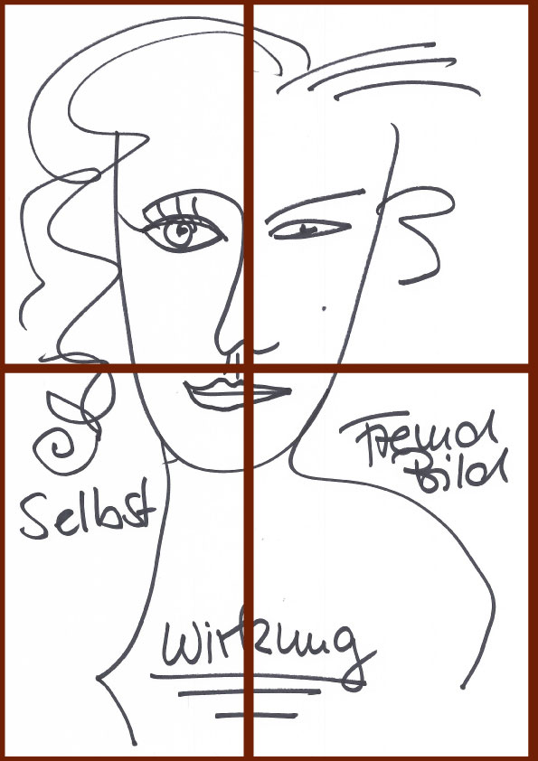

Seminarskizze

„Emotionen prägen unser gesamtes Handeln und Erleben. Selbstführung auf der Basis innerer Achtsamkeit ist die Vorraussetzung für echte Motivation.“
Dabei stelle ich meine Arbeit auf vier Säulen:
- Lebensfreude
- Achtsamkeit
- Die Entwicklung von „Awareness“, einer Ebene von „Gewahrsein“ und „Bewusstheit“ für zwischenmenschliche Prozesse
- Eine positive Herangehensweise an die Herausforderungen des privaten und beruflichen Lebens
Stimmung ist Schwingung!
Mit der modernen Technik unserer Zeit ist dieser Satz sogar messbar geworden. Und diese Stimmung kann so manches in Schwingung versetzen. Darum geht es in der Kommunikation mit anderen Menschen.